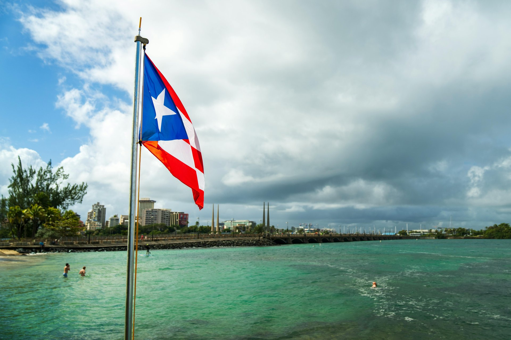

Puerto Rico Kayak Tours: Bio Bays, Mangroves & Clear-Bottom Adventures

Kayaking in Puerto Rico serves a broader purpose than it does in most destinations. Yes, there are ocean kayak rentals and paddling at protected coves. But in Puerto Rico, the kayak is also the primary vehicle for accessing the island's three bioluminescent bays—the mangrove channels of Laguna Grande in Fajardo and Mosquito Bay in Vieques can only be properly experienced by kayak. Add clear-bottom kayak tours on Condado Lagoon, mangrove paddle adventures at Piñones near San Juan, and Culebra Blue Paradise multi-activity experiences, and you have a kayaking ecosystem that covers every skill level and interest.
This guide covers Puerto Rico's kayak tour landscape from San Juan to Vieques, organized by location and type of experience.
Browse Puerto Rico kayak tours and book instantly
View Available Tours →Condado Lagoon Kayaking – San Juan
Condado Lagoon is a protected saltwater lagoon between the Condado beachfront and the Miramar neighborhood. Calm, warm, and shallow, it's the most accessible kayaking in Puerto Rico for guests staying in San Juan without their own transportation. Aqua Experiences operates several kayak formats here.
Clear Kayak Tour – Condado Lagoon (Aqua Experiences)
Clear-bottom kayaks with transparent hulls let you see straight down to the lagoon floor while paddling. Marine life, seagrass beds, and the occasional small fish are visible without getting in the water. Guided tours include narration about the lagoon ecosystem. The morning session has the best water clarity before afternoon boat traffic stirs the sediment.
Company: Aqua Experiences · Location: San Juan (Condado)
Check AvailabilityDouble Kayak Rental (Aqua Experiences)
Aqua Experiences offers double kayak rentals on Condado Lagoon for guests who want to paddle independently without a guide. Tandem kayaks are easier for beginners than solo kayaks—the second paddler provides stability and forward momentum that compensates for inexperience. Rental includes basic instruction and safety gear. Time-limited to the rental period; you set your own pace and route within the lagoon.
Company: Aqua Experiences · Location: San Juan (Condado)
Check AvailabilityMangrove Kayaking – Piñones
Paddle Board Adventure at Mangrove Piñones (Nomada Tours & Adventures)
Nomada Tours & Adventures runs guided paddle board and kayak tours through the mangrove system at Piñones, a coastal community east of San Juan between the airport and Luquillo. The Piñones lagoon is a UNESCO-listed biosphere reserve with mangrove channels, bird nesting areas, and calm water that's suitable for beginners. The area is less visited than Fajardo's mangroves, and the combination of bird life, mangrove ecology, and proximity to San Juan makes it a strong half-day option for nature-focused guests.
Company: Nomada Tours & Adventures · Location: Loíza (Piñones area)
Check AvailabilityBio Bay Kayaking – Fajardo (Laguna Grande)
Laguna Grande bio bay kayaking is the most-requested evening activity in Puerto Rico. The route starts at a launch point in Fajardo, paddles through a narrow mangrove channel lit only by the guide's light, and opens into the main lagoon where the bioluminescence is concentrated. Every paddle stroke disturbs millions of dinoflagellates into a blue glow. See our full bio bay tour guide for detailed operator comparison. Key operators:
Bio Bay Kayak Tour (Kayaking Puerto Rico)
Kayaking Puerto Rico runs one of the most-booked bio bay tours on Laguna Grande. Their guides are familiar with the bay's best positions for bioluminescence activity and time departures for maximum darkness. Standard sit-on-top kayaks or clear-bottom kayaks are used depending on availability and booking type.
Company: Kayaking Puerto Rico · Location: Fajardo
Check AvailabilityGlowing Bio Bay Kayak Adventure (Island Kayaking Adventure)
Island Kayaking Adventure offers bio bay tours with a focus on the ecology of the bioluminescence—what creates it, what threatens it, and how the mangrove channel and the bay form a connected ecosystem. Good for guests who want to understand the mechanism, not just observe the effect.
Check AvailabilityBio Bay Night Kayaking Tour Laguna Grande (Eco Action Tours)
Eco Action Tours provides guided night kayaking with environmental education as part of the tour narrative. Their guides cover local conservation efforts at Laguna Grande and the ongoing monitoring of the dinoflagellate population, which has been affected by light pollution and tourism pressure over the years.
Company: Eco Action Tours · Location: Fajardo
Check AvailabilityFajardo Bio Bay Kayak Tour (Pure Adventure)
Pure Adventure is based in Ceiba—the town immediately south of Fajardo where the Vieques ferry departs—and runs a bio bay kayak tour on Laguna Grande. Being based in Ceiba gives them a slightly different logistical approach than the Fajardo-marina-based operators; worth comparing availability if other operators are sold out on your dates.
Company: Pure Adventure · Location: Ceiba/Fajardo
Check AvailabilityBio Bay Kayaking – Vieques (Mosquito Bay)
Mosquito Bay's bioluminescence is notably brighter than Laguna Grande. Both Melaya's Tours and Mosquito Bio Bay Tours run clear-bottom kayak tours on Mosquito Bay. Overnight stays in Vieques are necessary for most bio bay tour schedules—tours depart after dark, and returning by ferry the same night is difficult. See our Vieques Island Tours guide for full details.
Culebra Kayaking
Culebra Blue Paradise Experience (East Island Excursions)
East Island Excursions runs a multi-activity day trip to Culebra that includes kayaking alongside snorkeling and stand-up paddleboarding. Kayaking around Culebra's coastline lets you access sections of shoreline that aren't easily reachable by swimming or from the beach alone—coves, mangrove inlets, and the areas below sea cliffs on the island's wilder north side. The combination with SUP and snorkeling makes this a more varied day than a straight boat-and-snorkel tour.
Company: East Island Excursions · Location: Fajardo (to Culebra)
Check AvailabilityLa Parguera Bio Bay Kayaking
Biobay Kayak, Swim, and Boat Tour (Parguera Watersports)
Parguera Watersports runs a combined kayak, swim, and motorboat tour at La Parguera—the south coast bio bay where swimming is permitted alongside kayaking. The multi-modal approach means you paddle into the bio bay on a kayak, swim in the bioluminescent water, and use the motorboat for transit sections. It's a more active version of the La Parguera bio bay experience than a purely boat-based tour.
Company: Parguera Watersports · Location: Lajas (La Parguera)
Check AvailabilityKayak Rentals for Independent Paddling
Kayak Rental (Pirate Snorkeling Shack)
Pirate Snorkeling Shack in Fajardo rents kayaks for independent use on the water near their base. No guide, no fixed itinerary—you take the kayak and paddle where you want within the designated area. Overnight kayak rentals are also available for guests who want to spend a full day and evening on the water. Snorkeling gear rental is available separately if you want to snorkel from your kayak.
Company: Pirate Snorkeling Shack · Location: Fajardo
Check AvailabilityKayaking Season and Conditions
Puerto Rico is a year-round kayaking destination. Summer (June–August) brings lighter trade winds and calmer water in the east—good for bio bay tours. Winter (December–March) can bring stronger trade winds, particularly in the afternoon, which makes morning bio bay tours and morning kayak rentals the better choice. Rain affects kayaking less than most outdoor activities—the water is warm enough that getting wet isn't a problem, and paddling through light rain on a bio bay tour is a common and completely acceptable experience.
The mangrove channel at Laguna Grande provides a sheltered paddling environment regardless of wind conditions on the open water outside—one reason Fajardo's bio bay tours rarely cancel due to weather.
See also: Bio Bay Tours Compared · Vieques Tours · San Juan Tours · Fajardo Boat Tours
Book a Puerto Rico kayak tour or bio bay experience
Browse All Kayak Tours →